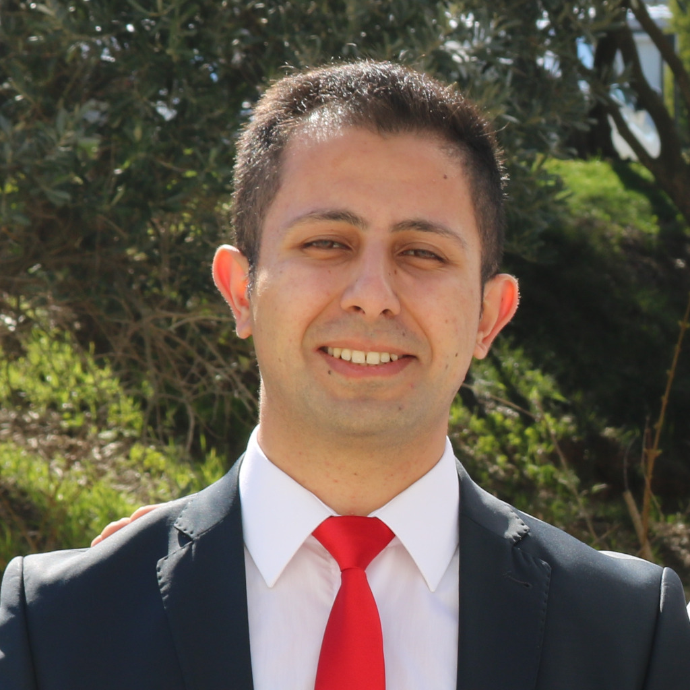

PERI · Türkiye / Germany
Marketing & Communication · Sales Enablement · CRM & Analytics · Commercial Process Support
Connecting commercial processes, analytics and enterprise systems to turn complex business challenges into clearer decisions and practical improvements.

I am a business and analytics professional with experience across marketing, sales enablement, CRM, reporting and commercial operations in international environments.
My work focuses on connecting business teams with the systems, data and processes they use every day. I hold an MBA in Business Administration (Data Analytics) and a bachelor's degree in Mechanical Engineering.
Based in Augsburg, Germany.
Power BI, KPI reporting, data quality and business insights.
Microsoft Dynamics 365, user enablement and business process alignment.
Building process knowledge across logistics, finance and controlling.
Commercial reporting, user training and cross-functional collaboration.
Price management workflows, data preparation and process support.
Exploring document-grounded AI assistance and practical process improvements.
Illustrative descriptions of work areas. Detailed case studies and visuals can be added using approved or synthetic data.
Turning operational data into clearer KPI views and actionable reporting for commercial teams.
Power BIData QualitySupporting users, improving data practices and aligning CRM workflows with business needs.
Dynamics 365TrainingWorking with structured data and workflows to support consistent commercial processes.
PricingExcelDeveloping SAP S/4HANA process knowledge and connecting it with broader experience in enterprise systems, analytics and business operations.
Customer and supplier master data, BP roles and data quality.
FI/CO fundamentals, payment processes, dunning and tax-related workflows.
Asset acquisition, technical clearing and depreciation processes.
Profitability characteristics, profit center derivation and reporting concepts.
Exploring end-to-end ERP process integration and master data dependencies.
Connecting business requirements, clean data and effective user adoption.
These topics reflect ongoing learning and process knowledge; they are not presented as completed SAP implementation projects.
An interdisciplinary perspective across commercial operations, analytics and technology.
Marketing & Communication · Sales Enablement · CRM & Analytics · Commercial Process Support
Hochschule Macromedia, Munich
Bülent Ecevit University
Explore my professional background or reach out through LinkedIn.
GitHub · LinkedIn profile link to be added · CV to be added